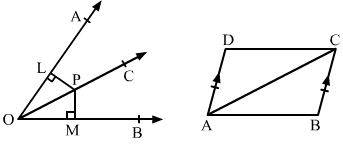
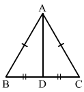
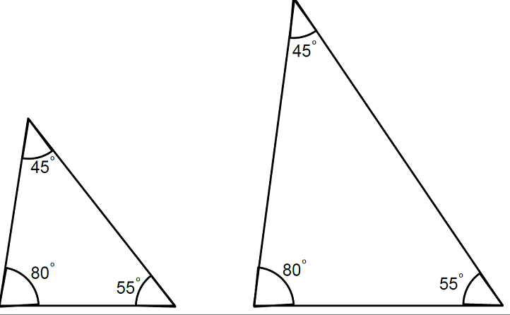

Question:1
State the correspondence between the vertices, sides and angles of the following pairs of congruent triangles.
(i) ∆ABC ≅ ∆EFD
(ii) ∆CAB ≅ ∆QRP
(iii) ∆XZY ≅ ∆QPR
(iv) ∆MPN ≅ ∆SQR
Solution:
Question:2
Given below are pairs of congruent triangles. State the property of congruence and name the congruent triangles in each case.
.png)
Solution:
Question:3
In Fig. PL ⊥ OA and PM ⊥ OB such that PL = PM. Is ∆PLO ≅ ∆PMO?
Give reasons in support of your answer.

Solution:
Question:4
In Fig. AD = BC and AD || BC. Is AB = DC? Give reasons in support of your answer.
Figure
Solution:
Question:5
In the adjoining figure, AB = AC and BD = DC. Prove that ∆ADB ≅ ∆ADC and hence show that
(i) ∠ADB = ∠ADC = 90°
(ii) ∠BAD = ∠CAD.

Solution:
Question:6
In the adjoining figure,
ABC is a triangle in which
AD is the bisector of ∠
A. If
AD ⊥
BC, show that ∆
ABC is isosceles.
.png)
Solution:
Question:7
In the adjoining figure, AB = AD and CB = CD.
Prove that ∆ABC ≅ ∆ADC.
Figure
Solution:
Question:8
In the given figure, PA ⊥ AB, QB ⊥ AB and PA = QB.
Prove that ∆OAP ≅ ∆OBQ.
Is OA = OB?
Figure
Solution:
Question:9
In the given figure, triangles ABC and DCB are right-angled at A and D respectively and AC = DB. Prove that ∆ABC ≅ ∆DCB.
Figure
Solution:
Question:10
In the adjoining figure, ∆ABC is an isosceles triangle in which AB = AC. If E and F be the midpoints of AC and AB respectively, prove that BE = CF.
Figure
Solution:
Question:11
In the adjoining figure, P and Q are two points on equal sides AB and AC of an isosceles triangle ABC such that AP = AQ.
Prove that BQ = CP.
Figure
Solution:
Question:12
In the given figure, ∆ABC is an isosceles triangle in which AB = AC. If AB and AC are produced to D and E respectively such that BD = CE.
Prove that BE = CD.
Figure
Solution:
Question:13
In the adjoining figure, ∆ABC is an isosceles triangle in which AB = AC. Also, D is a point such that BD = CD.
Prove that AD bisects ∠A and ∠D
Figure
Solution:
.
Question:14
If two triangles have their corresponding angles equal, are they always congruent? If not, draw two triangles which are not congruent but which have their corresponding angles equal.
Solution:
No, its not necessary. If the corresponding angles of two triangles are equal, then they may or may not be congruent.
They may have proportional sides as shown in the following figure:

Question:15
Are two triangles congruent if two sides and an angle of one triangle are respectively equal to two sides and an angle of the other? If not then under what conditions will they be congruent?
Solution:
No, two triangles are not congruent if their two corresponding sides and one angle are equal. They will be congruent only if the said angle is the included angle between the sides.
Question:16
Draw ∆ABC and ∆PQR such that they are equal in area but not congruent.
Solution:
.png)
Both triangles have equal area due to the the same product of height and base. But they are not congruent.
Question:17
Fill in the blanks:
(i) Two lines segments are congruent if they have ...... .
(ii) Two angles are congruent if they have ...... .
(iii) Two squares are congruent if they have ...... .
(iv) Two circles are congruent if they have ...... .
(v) Two rectangles are congruent if they have ...... .
(vi) Two triangles are congruent if they have ...... .
Solution:
(i) the same length
(ii) the same measure
(iii)the same side length
(iv) the same radius
(v) the same length and the same breadth
(vi) equal parts
Question:18
Which of the following statements are true and which of them are false?
(i) All squares are congruent.
(ii) If two squares have equal areas, they are congruent.
(iii) If two figures have equal areas, they are congruent.
(iv) If two triangles are equal in area, they are congruent.
(v) If two sides and one angle of a triangle are equal to the corresponding two sides and angle of another triangle, the triangle are congruent.
(vi) If two angles and any side of a triangle are equal to the corresponding angles and the side of another triangle then the triangles are congruent.
(vii) If three angles of a triangle are equal to the corresponding angles of another triangle then the triangles are congruent.
(viii) If the hypotenuse and an acute angle of a right triangle are equal to the hypotenuse and the corresponding acute angle of another right triangle then the triangle are congruent.
(ix) If the hypotenuse of a right triangle is equal to the hypotenuse of another right triangle then the triangles are congruent.
(x) If two triangles are congruent then their corresponding sides and their corresponding angles are congruent.
Solution:
(i) False
This is because they can be equal only if they have equal sides.
(ii) True
This is because if squares have equal areas, then their sides must be of equal length.
(iii) False
For example, if a triangle and a square have equal area, they cannot be congruent.
(iv) False
For example, an isosceles triangle and an equilateral triangle having equal area cannot be congruent.
(v) False
They can be congruent if two sides and the included angle of a triangle are equal to the corresponding two sides and the included corresponding angle of another triangle.
(vi) True
This is because of the AAS criterion of congruency.
(vii) False
Their sides are not necessarily equal.
(viii) True
This is because of the AAS criterion of congruency.
(ix) False
This is because two right triangles are congruent if the hypotenuse and one side of the first triangle are respectively equal to the hypotenuse and the corresponding side of the second triangle.
(x) True